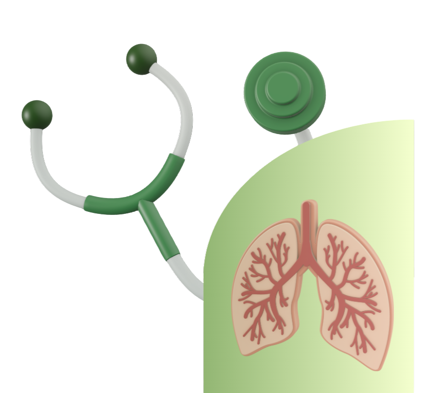

CoughPH
CoughPHAI-assisted respiratory screening.
CoughPH analyzes the sound of a cough through a two-tier gated AI pipeline: a focused check for tuberculosis first, then a second model screening for COPD, Pneumonia, or a healthy result.

How the System Works
One audio clip moves through two gated stages before it becomes a screening result.
TB Gatekeeper
A focused check for tuberculosis. A positive result halts the pipeline and returns an alert immediately.
Respiratory Classifier
If TB is ruled out, screens for COPD or Pneumonia, or confirms a healthy result.
Built for the Clinic
The primary capture device is an ESP32-S3 with an INMP441 microphone over MQTT. If the device is unavailable, screening also works from a browser microphone recording or an uploaded WAV file.
Doctor / Nurse Portal
Clinicians can review the spectrogram, confidence score, and a suggested next step for every screening session.
Frequently Asked Questions
Is a CoughPH result a medical diagnosis?
No. CoughPH is a screening-support tool, not a certified diagnostic device. A result is a suggested next step, not a diagnosis, and should not replace evaluation by a licensed physician.
What happens to my recording and results?
Nothing is captured without your explicit consent. Once consent is given, your recording and result are stored so you or a clinician can review them later. You can request export or deletion at any time from the Legal & Privacy page.
Who can see my screening history?
Only you and logged-in clinicians can review screening results. The full Screening Dashboard, which lists results across patients, is restricted to approved doctor/nurse accounts.
What conditions does CoughPH screen for?
Four classes: Healthy, COPD, Pneumonia, and Tuberculosis, using the two-tier gated pipeline described on the About System page.
Consent-First, and Compliant with Philippine Law
No audio is captured without explicit, informed consent. CoughPH follows the Data Privacy Act of 2012 (R.A. 10173) and the Cybercrime Prevention Act of 2012 (R.A. 10175).
Read the full Legal & Privacy page →